Chapter 1 Inference Prinicipal Component Analysis
1.1 Description of Method and Data
1.1.1 Method
In data analysis, PCA reduces the dimensions in a multivariate data set. It maximizes variance on uncorrelated variables, which are created at the time of data analysis (Jolliffe and Cadima, 2016). The first principal component extracts the maximum explained variance or inertia from the data table.The second component must be orthogonal to the first, and have the second largest variance. The rest of the components take on the next biggest level of variance until the final component retains the smallest level of variance. Factor scores are the new values corresponding to the observations and can be projected on to the principal components graphically.
1.1.2 Data
The data set is a survey of over 927 participants, after omitting missing observations with missing values, on 19 variables related to music. Survey questions are rated on an scale 0-5 with 0 being low and 5 being high. For example, a 5 on Music Interest is high preference for an interest in music while a 1 on Tempo preference indicates a liking of slow tempo. The age of the participants is 15 to 30. The survey assessed music preferences.
head(df5) %>%
kbl() %>%
kable_paper("hover", full_width = F)| Music | Fast | Dance | Folk | Country | Classical | Musical | Pop | Rock | Metal | Punk | Hiphop | Reggae | Swing | RnR | Alt | Lat | Techno | Opera |
|---|---|---|---|---|---|---|---|---|---|---|---|---|---|---|---|---|---|---|
| 5 | 3 | 2 | 1 | 2 | 2 | 1 | 5 | 5 | 1 | 1 | 1 | 1 | 1 | 3 | 1 | 1 | 1 | 1 |
| 4 | 4 | 2 | 1 | 1 | 1 | 2 | 3 | 5 | 4 | 4 | 1 | 3 | 1 | 4 | 4 | 2 | 1 | 1 |
| 5 | 5 | 2 | 2 | 3 | 4 | 5 | 3 | 5 | 3 | 4 | 1 | 4 | 3 | 5 | 5 | 5 | 1 | 3 |
| 5 | 3 | 2 | 1 | 1 | 1 | 1 | 2 | 2 | 1 | 4 | 2 | 2 | 1 | 2 | 5 | 1 | 2 | 1 |
| 5 | 3 | 4 | 3 | 2 | 4 | 3 | 5 | 3 | 1 | 2 | 5 | 3 | 2 | 1 | 2 | 4 | 2 | 2 |
| 5 | 3 | 2 | 3 | 2 | 3 | 3 | 2 | 5 | 5 | 3 | 4 | 3 | 4 | 4 | 5 | 3 | 1 | 3 |
1.2 Heatmap: Correlation matrix
The correlation plot show that Punk and Dance, Rock and Roll and Rock, Opera and Classical, and Techno and Dance are fairly correlation to each while Metal, Punk and Rock form a strong cluster of correlation values. There is an argument to be made that a covariance matrix is best for survey data, that is a matrix that is not normalized so that questions with a large variance take up more importance than questions with a small variance. In other words, to equalize the questions by scaling would take away the effect of question father from the center of gravity.
corrplot(cor(mt25), # Correlation matrix
method = "shade", # Correlation plot method
type = "full", # Correlation plot style (also "upper" and "lower")
diag = TRUE, # If TRUE (default), adds the diagonal
tl.col = "black", # Labels color
bg = "white", # Background color
title = "", # Main title
col = NULL) 
1.3 Analysis
The variable inf.pca contains descriptive and inference data. The eigenvalues, for example, are the amount of variance in the corresponding principal components.
I decided to run a seed set to generate a consistent set of random sample to make my functions reproducible.
set.seed(91)A PCA with inference was run using epPCA.inference.battery() using scaled and centered data. Permutation testing and bootstraping were run as well.
res_pcaInf <- epPCA.inference.battery(df5, center = TRUE, scale = "SS1",
DESIGN = df4$Gender, graphs = FALSE,
test.iters = 999)1.3.1 Testing the eigenvalues
I decided to remove the code for the histograms of the eigenvalues as it showed a p-value of much less than 0.05. Thus, the eigenvalues were shown to be significant. It is a good practice to personally run a permutation test on eigenvalues for inference PCA, as this includes inferential statistical methods like bootstrap that may not have intrinsic value without a visualization technique like a histogram of the eigenvalues.
1.3.2 Scree Plot with Permutation Testing
The scree plot is a visualization of the eigenvalues that contain the most explained variance along with statistical significance indicated by the color violet and non-statistical significant indicated by the color black. The significance level is based on a permutation test, which is a resampling without replacement. Thus, the null hypothesis can be evaluated to be true or false.
Since three dimensions are significant, I will be creating two sets of factor score plots. The Scree plot is independent of the DESIGN variable. The Scree Plot revealed that at least three eigenvalues are important for the component analysis.
The elbow-rule states that when the screen plot goes from a step decline to a flat horizontal, the dimension on the steep-decline, or the first three dimensions in our case, are of importance.
It is important to center in PCA since the mean contains the largest amount of explained variance. Thus, if the data is not centered, the first dimension would capture the variance that the mean contributed to the data set.
my.scree <- PlotScree(ev = res_pcaInf$Fixed.Data$ExPosition.Data$eigs,
p.ev = res_pcaInf$Inference.Data$components$p.vals)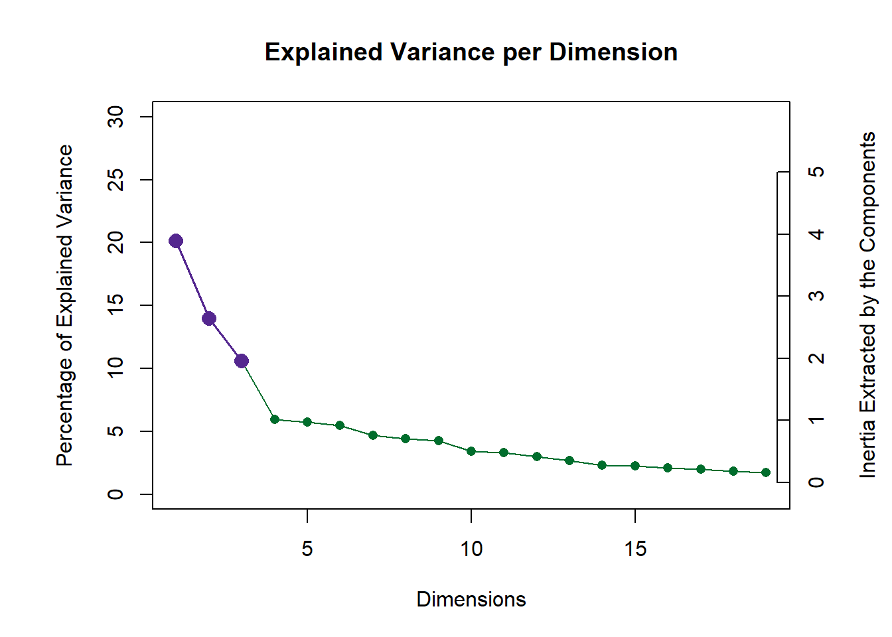
1.3.3 Row Factor Scores
new_color = res_pcaInf$Fixed.Data$Plotting.Data$fi.col
new_color = recode(new_color, "#84BF30" = "blue", "#305ABF" = "deeppink")
my.fi.plot <- createFactorMap(res_pcaInf$Fixed.Data$ExPosition.Data$fi, display.labels = FALSE, # data
title = "Music Row Factor Scores", # title of the plot
axis1 = 1, axis2 = 2, # which component for x and y axes
pch = 19, # the shape of the dots (google `pch`)
cex = 2, # the size of the dots
text.cex = 2.5, # the size of the text
alpha.points = 0.1,
col.points = new_color, # color of the dots
col.labels = res_pcaInf$Fixed.Data$Plotting.Data$fi.col, # color for labels of dots
)The observation factor scores are projected on the first two dimension with the DESIGN variable of gender, blue for males and pink for females. It seems at first glance to be uniformly dispersed, but subsequent analytic tools will confirm that or reveal subtle gender distinctions.
As the Scree plot indicated, the Row Factor Score plot shows 20% of the variance on the x-axis or first dimension and 14% of the variance on the y-axis or second dimension.
fi.plot <- my.fi.plot$zeMap + fi.labels # you need this line to be able to save them in the end
fi.plot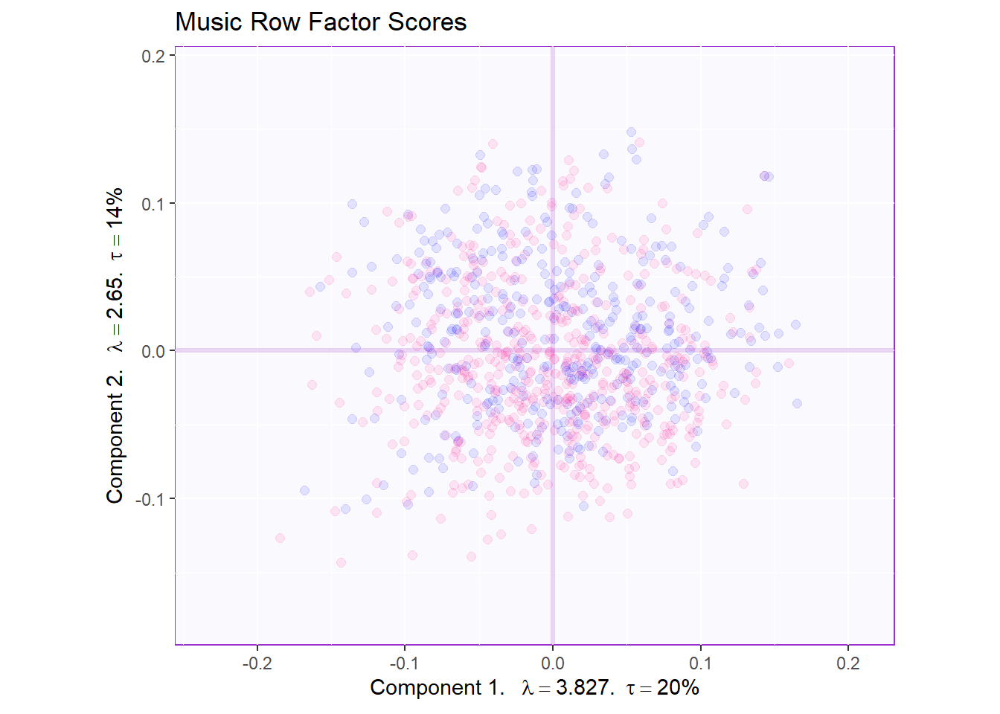
1.3.4 Row Factor Scores with Means
Here the means of the row factor scores under the DESIGN of gender show a clear separation along the second dimension and a subtle distinction along the first dimension.
As we project the variables later on, we will be able to link gender with certain music preferences. Thus, we can make sense of the large data table with nineteen dimensions and thousands of data points.
1.3.5 Row Factor Scores with Tolerance interval
The Tolerance Interval contains a p-value of .95 indicating geometrically where 95% of the population lies in the factor score map. While there is much overlap, female group spreads towards the third quadrant while the male group spread toward the first quadrant. This will further quantify how we can interpret future graphs with specific variables going to spefific groups of observations.
TIplot <- MakeToleranceIntervals(res_pcaInf$Fixed.Data$ExPosition.Data$fi,
design = as.factor(df4$Gender),
col = grp.col[row.names(fi.mean)],
line.size = .50,
line.type = 3,
alpha.ellipse = .2,
alpha.line = .4,
p.level = .95)
# If you get some errors with this function, check the names.of.factors argument in the help.
fi.WithMeanTI <- my.fi.plot$zeMap_background + my.fi.plot$zeMap_dots +
fi.mean.plot$zeMap_dots + fi.mean.plot$zeMap_text + TIplot + fi.labels
fi.WithMeanTI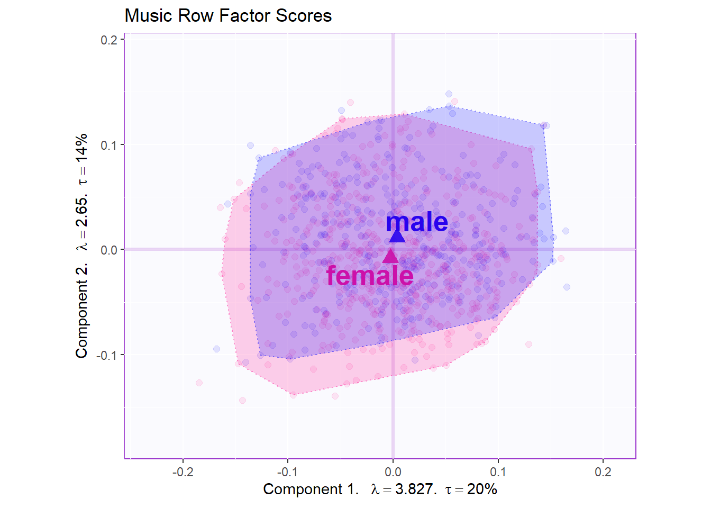
1.3.6 Bootstrap interval
We can also add the bootstrap interval for the group means to see if these group means are significantly different. The BootCube has bootstapped means 1,000 times for each group by 19 variables.It is generated by the user before making a confidence interval ellipse for PCA.
The first step is to bootstrap the group means, with 1,000 iterations. Thus, we are resampling with replacement one thousand times, and we can calculate means and confidence intervals on those resampled sets of data.
Bootstrap interval is a subset of a confidence interval, which is a statistical descriptor that validates if the population mean or statistic falls within say 95% of the samples. In a bootstap inerval, the samples are the resampling data sets with replacement.
# Depend on the size of your data, this might take a while
fi.boot <- Boot4Mean(res_pcaInf$Fixed.Data$ExPosition.Data$fi,
design = df4$Gender,
niter = 1000)
# Check what you have
#fi.boot
# What is the cube? Check the first 4 tables. You don't need to include this in
# your output, because it's a lot of junk text.
#fi.boot$BootCube[,,1:4]On the plot of the bootstrap interval, the bootstrap intervals closely surrounds the groups means, and they are non-overlapping. Where as the tolerance interval geogrpahically outlines 95% of the observations, the bootstrap interval outlines 95% of the means from the resampling. Thus 95% of the group means of males are distinct from 95% of the group means of females.
# Check other parameters you can change for this function
bootCI4mean <- MakeCIEllipses(fi.boot$BootCube[,c(1:2),], # get the first two components
col = grp.col[row.names(fi.mean)])
fi.WithMeanCI <- my.fi.plot$zeMap_background + bootCI4mean +
my.fi.plot$zeMap_dots + fi.mean.plot$zeMap_dots +
fi.mean.plot$zeMap_text + fi.labels
fi.WithMeanCI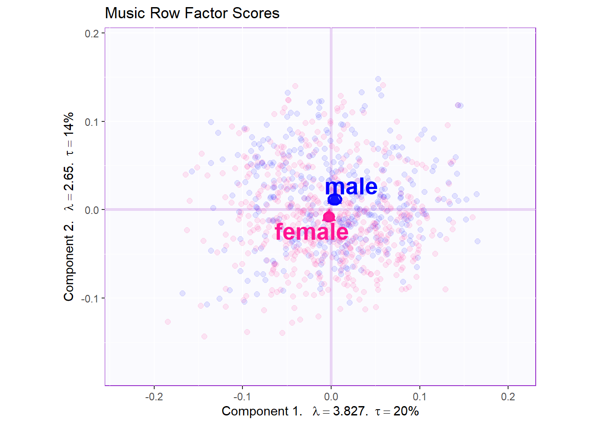
1.3.7 Loadings
Loadings can be defined several ways such as the sum of squares of 1 single component summing to 1, the sum of squares of a single variables summing to 1, or the sum of squares of all of the variables summing to q or the total inertia, which is the total variance.
Metal, Punk, Rock, and Alternative are separated from the other variables along the second dimension while Techno, Hiphop, Pop, and Dance are separated fromthe other variables alond the first dimension.
Since mean of males was above the x-axis, males tend to like metal, punk, rock, and alternative. Females tend to like everything else, especially Latino, Musical, Folk, Swing, Classical, and Rock and Roll. These later groups go in the positive direction toward females and the negative direction can be projected back towards males. Thus, males do not like Latino, Musical, Folk, Swing, Classical, and Rock and Roll.
Additionally, the first dimension seems to separate Techo, Hiphop, Pop, and Dance, which tend to be fast tempo songs from the rest of the genres which range from moderate to slow.
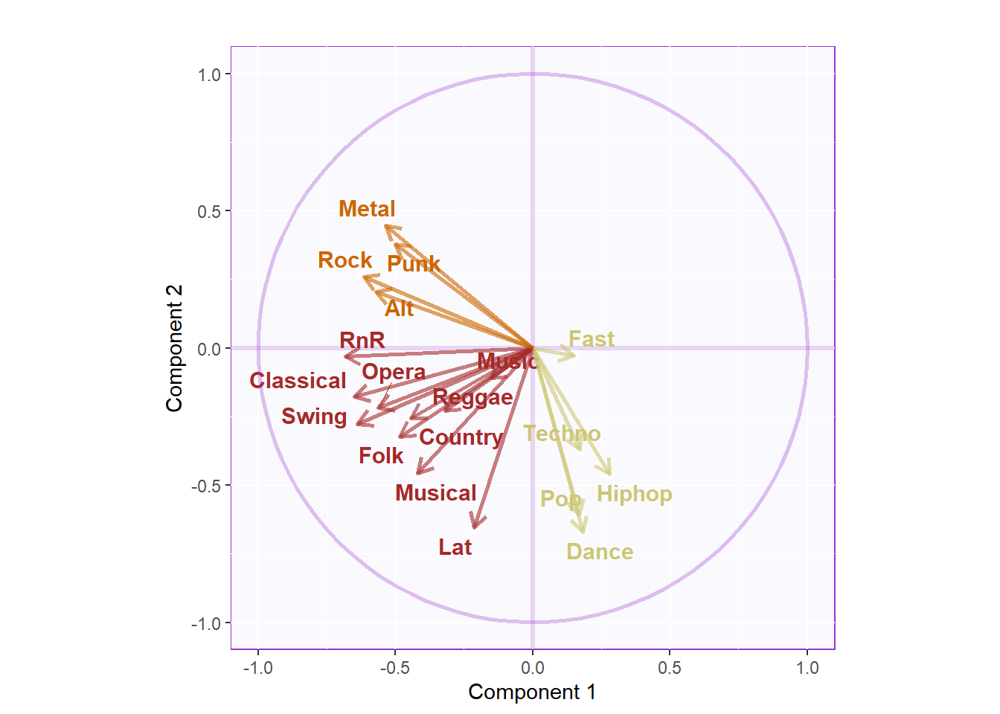
The variance of each component is plotted for the factor scores for the variables. We see that the biggest amount of variance comes from those away from the center of gravity. Thus, Metal, Punk, Rock, Alternative, Rock and Roll, Opera, Swing, Musical, Latino, Pop, Dance, and Hiphop capture the largest amounts of variance compared to the other variables.
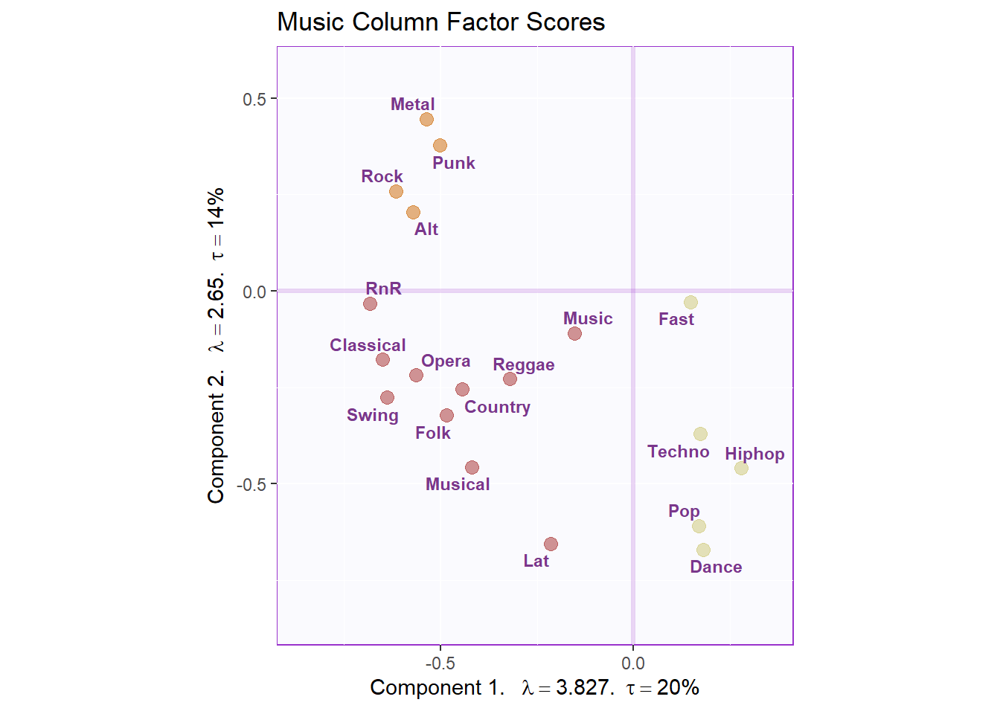
1.3.8 Dimensions 2 and 3
Below are the Components 2 and 3 plotted based on the results of the Scree Plot. The pink dot (females) are more dispersed away from the center of gravity and in third and fourth quadrant. The blue dot (males) overlap in the center of gravity and above the x-axis. The third dimension retains 11% of the total variance of the data set.
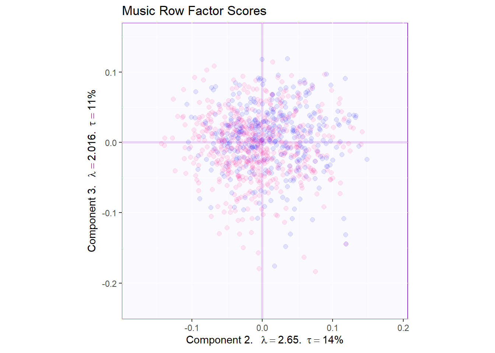
The males and females seem to form distinct groups. Further, it is surprising that the female is still close to the origin. However, upon closer examination there are several female observations on the periphery, especially in the second and third quadrant. Here, the gender DESIGN is split along the second dimension. The third dimension shows little group distinction along the DESIGN of gender.
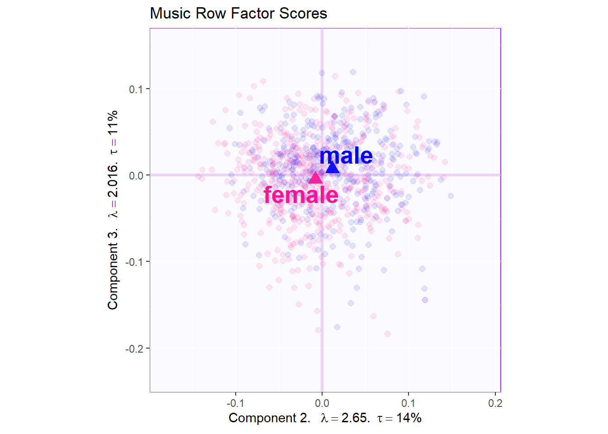
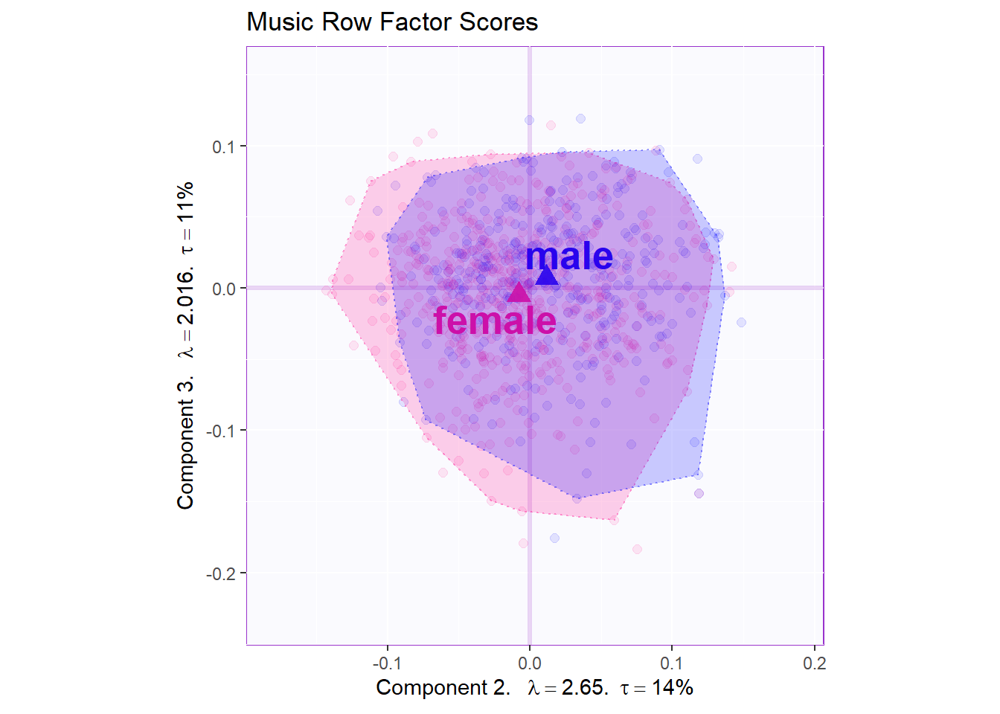
The tolerance interval seems to show a convex hull with the protrusion of 95% of female observations extending into the second, third, and fouth quadrants.

The Confidence intervals are non-overlapping, indicating a clear separation between groups.
1.3.9 Loadings / Circle of Correlation
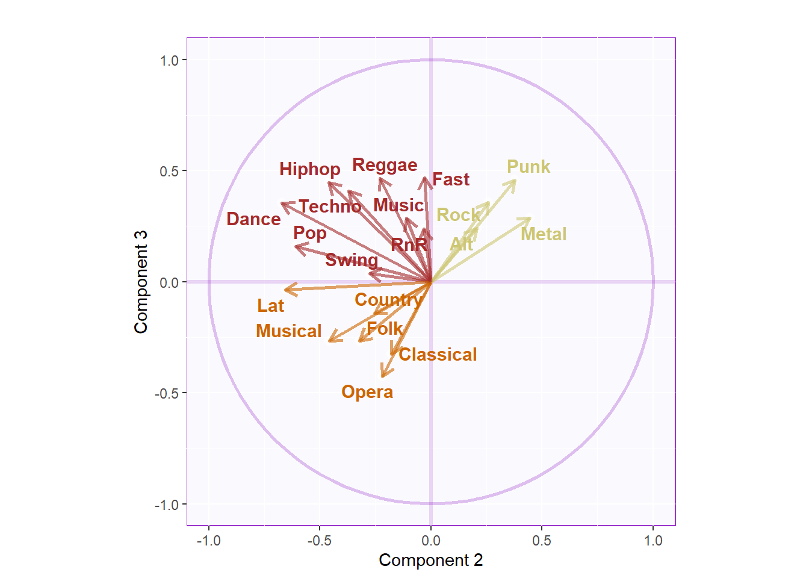 Like before, the second dimension shows that males like Rock, Punk, Metal, and Alternative while females like everything else. The third dimension shows that males like the same genres of Rock, Punk, Metal, and Alternative while females like Latino, Musical, Opera, and Classical. This is consistent to what was seen in the first dimension.
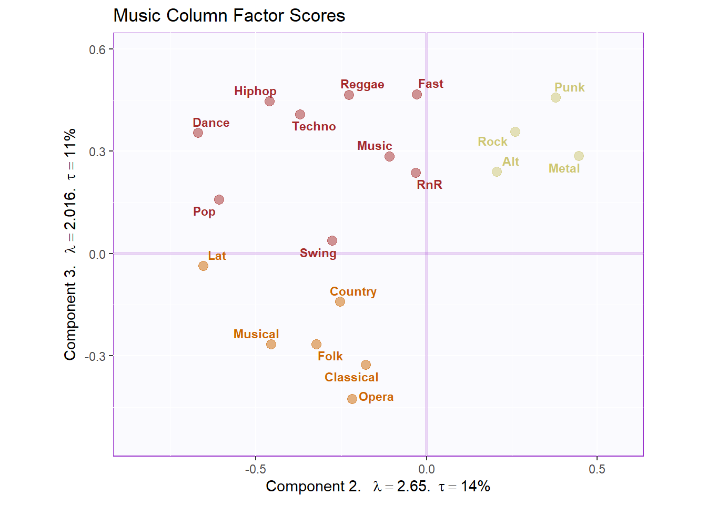
Component 2: Rock Concert Music vs. everything else Interpret: Males align with the Rock Concert Music genres.
Component 3: Orchestra, Folk, and Ethic (Latino) music vs. everything else. Interpret: Females align with the Orchestra, Folk, and Ethic (Latino) music genres.
1.3.10 Contribution barplots and Bootstrap Ratios on Variables
Here we are resampling the factor scores for the variables with replacement to generate benchmarks for how stable the data variables are in the analysis, specifically testing the stability of the original results. If a set of variables in the analysis are key to the conclusions, one can see if they are shown to also be important in the bootstrap ratios.
signed.ctrJ <- res_pcaInf$Fixed.Data$ExPosition.Data$cj * sign(res_pcaInf$Fixed.Data$ExPosition.Data$fj)
# plot contributions for component 1
ctrJ.1 <- PrettyBarPlot2(signed.ctrJ[,1],
threshold = 1 / NROW(signed.ctrJ),
font.size = 3,
signifOnly = TRUE,
color4bar = gplots::col2hex(df5.col), # we need hex code
ylab = 'Contributions',
ylim = c(1.2*min(signed.ctrJ[,1]), 1.2*max(signed.ctrJ[,1])),
horizontal = FALSE
) + ggtitle("Contribution barplots", subtitle = 'Component 1: Variable Contributions (Signed)')The the next line of code puts the figures side to side.
As stated before, males were explained to like Rock, Punk, Metal, and Alternative as shown by the second dimension. Punk and Metal are shown to contribute to the second dimension importantly while Rock and Alternative do not. However, all four genres of Rock, Punk, Metal, and Alternative have significant bootstrap ratios. Taken both results together, Punk and Metal can be strongly argued for both contributing to the second dimension enough and being stable enough to link them to the male gender over female gender in terms of preference.
grid.arrange(
as.grob(ctrJ.1),
as.grob(ctrJ.2),
as.grob(ba001.BR1),
as.grob(ba002.BR2),
ncol = 2,nrow = 2,
top = textGrob("Barplots for variables", gp = gpar(fontsize = 18, font = 3))
)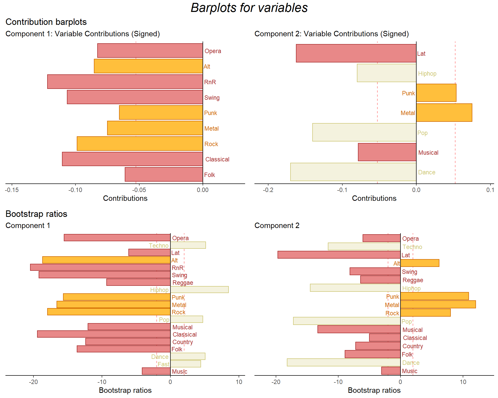
The second takeaway from above is that female survey participants showed a preference for Latino, Musical, Opera, and Classical as explained by the first and third dimensions. Opera and Classical contribute to the both the first and third dimensions while all four genres have significant bootstrap ratios for the first dimension and Musical, Opera, and Classical hve significant bootstrap ratios for the third dimension.
Taken together, we can say that Opera and Classical contribute importantly to the first and third dimension and have significant bootstrap ratios for those dimension. Thus, we can strongly argue that females have a preference for Opera and Classical over male survey participants.
 ### Save figures to PPT
### Save figures to PPT
The following code can give you a .pptx file with all the figures saved in the directory.
REMEMBER: Never use a screen shot
# Here we can save all figures to a PowerPoint
#savedList <- saveGraph2pptx(file2Save.pptx = 'AllFigures_inf5',
#title = 'All Figures for inference5',
#addGraphNames = TRUE)1.4 Summary
Component 1
Rows: Survey Participants
Cols: Fast Songs VS Slower to moderately tempo songs
Interpret: Aside from Gender, fast/dance music differs from vs. slower to
moderately tempo songs
Component 2 Rows: Survey Participants Cols: Rock Concert Music Interpret: Rock Concert Music differs from traditional and popular party music
Males tend to prefer Rock, Punk, Metal, and Alternative as told by the second dimension while females tend to like Latino, Musical, Opera, and Classical as told by the first and third dimensions.
Bibliography 1. https://royalsocietypublishing.org/doi/10.1098/rsta.2015.0202